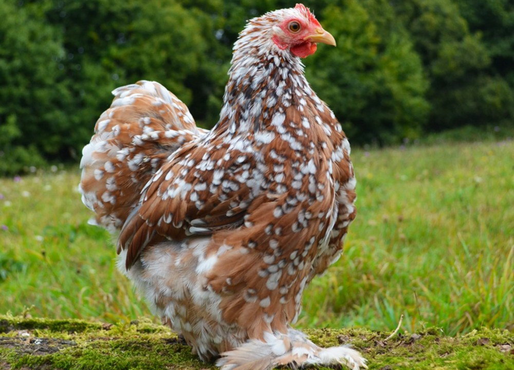

Race d’ornement
Poule Pékin
La Pékin est une petite poule d’ornement appréciée pour sa silhouette ronde, ses pattes emplumées et son allure très décorative. Elle plaît beaucoup aux familles qui recherchent une présence douce et agréable à observer.